"Focus is the art of choosing what to see and what to let blur into oblivion."
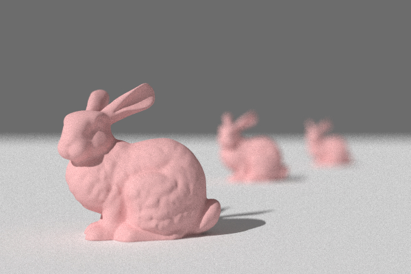
Aperture at f/32
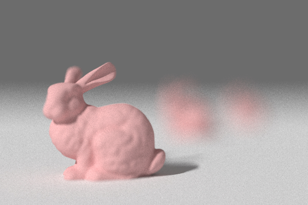
Aperture at f/8
The thinlens models depth of field effect focusing on the objects in the focal plane and blurs that are out of the field. It models the fact that rays don't just pass through a single point but a aperture of certain radius. The aperture contols the blur effect which is defined in terms of fstop values in photography i.e. Aperture is defined in terms of focal length of lens. Higher the f_stop values less the aperture size. In figure above we can see effect of changing the aperture from f/32 to f/8 in the test scene. In our scene we have used this feature to focus on the center temple building and blur out objects that are very close to the lens like corals, fish and turtle. Below displayed is the effect of using this feature in our scene.
Code Files:
src/cameras/thinlens.cpp
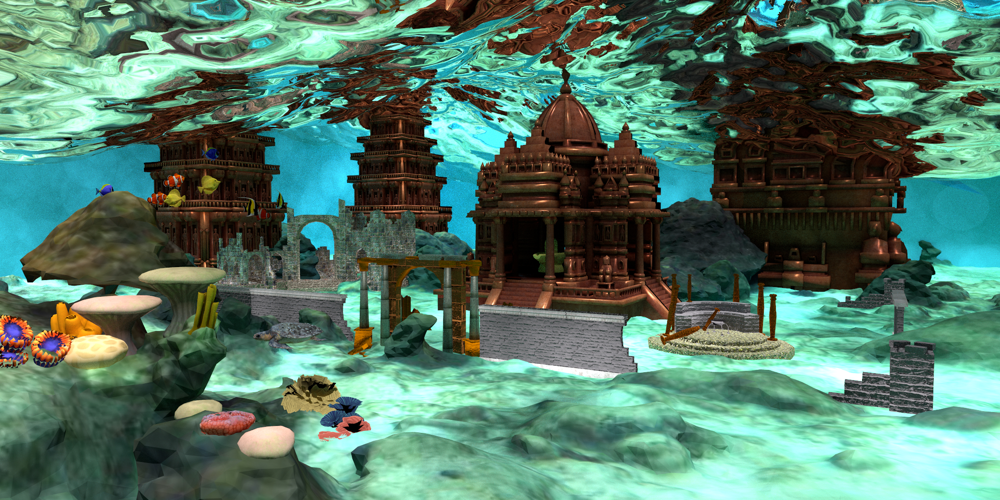
Pinhole Camera
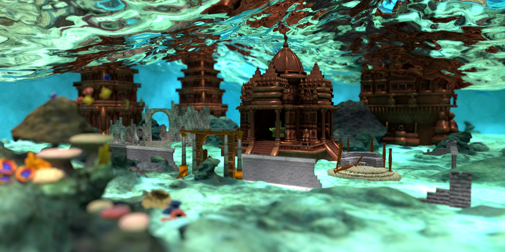
Thinlens Camera
2. Normal Mapping
"A trick of the normals, a play of the light—where the eye perceives, the surface deceives."
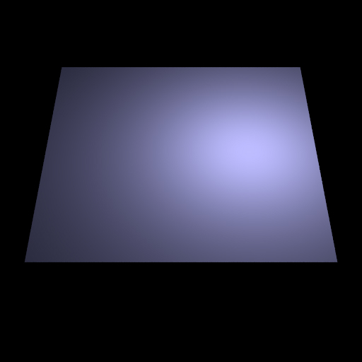
Without Normal Mapping
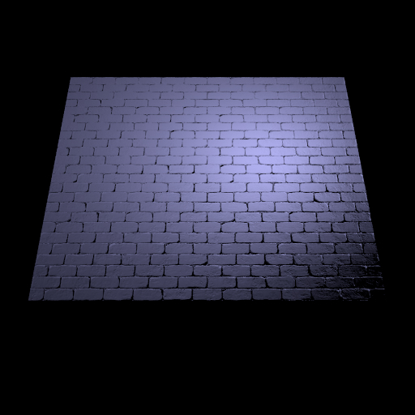
With Normal Mapping
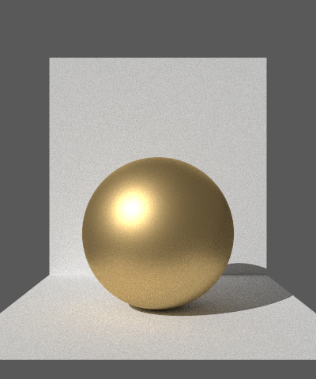
Without Normal Mapping
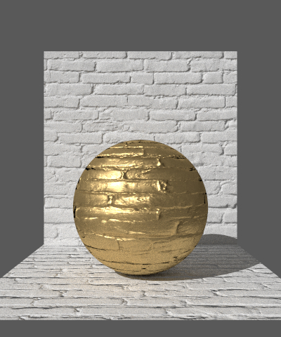
With Normal Mapping
The second feature implemented is normal mapping. This is used in order to add lot of details to simple mesh. For example the details of brick on plane can be simply implemented by changing the shading normals without requiring complex meshes as we can see in the test images above. In our scene we have added 3d models of ruins which is made of simple shapes. Like the wall is just a cuboid. However using the normal mapping we are bale to get details like brick texture on those meshes. Below you can see the effect of using normal map in our scene.
Code Files:
src/core/instance.cpp
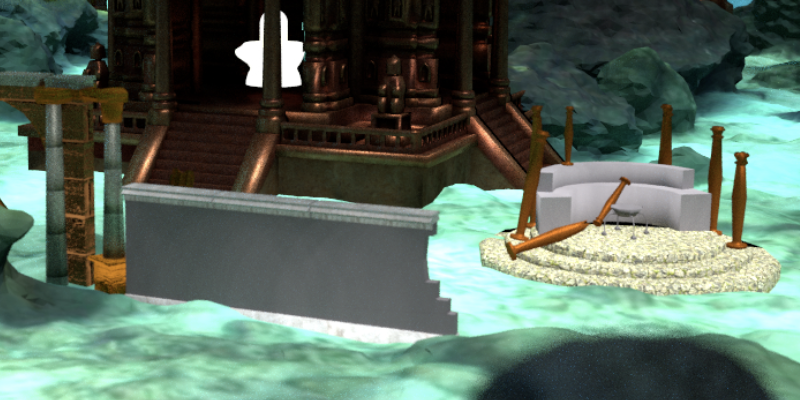
Without Normal Mapping
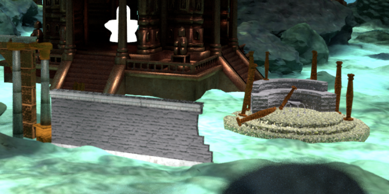
With normal Mapping
3. Signed Distace Fields(SDF)
"What's cooler than 3D models? Pure Math."
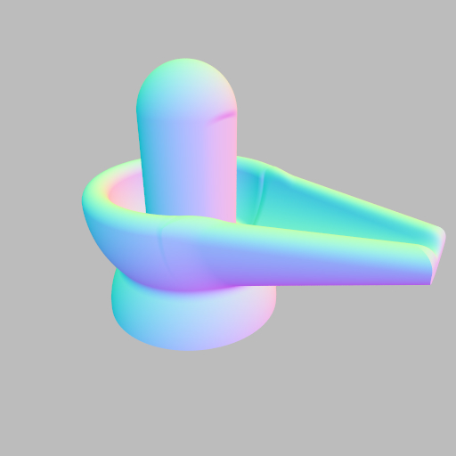
Normals of SDF Shape
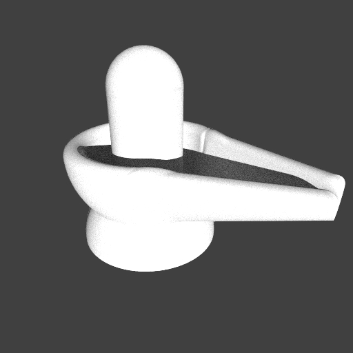
SDF shape with Direct Integrator
Signed Distance field is way of representing a shape using mathematical function instead of mesh. We have implemented this because we didnt find any 3d model of our choice for the idol to be placed in the temple. The Center IDOL is generated using Signed distance function using concept of Ray Marching. To generate our required shape we have used different primitives like capsule, sphere, hollow sphere, capped cone etc, and combined them with union, intersection and subtraction operation on their individual signed distance function. The overview of these operations is shown in the figure below.
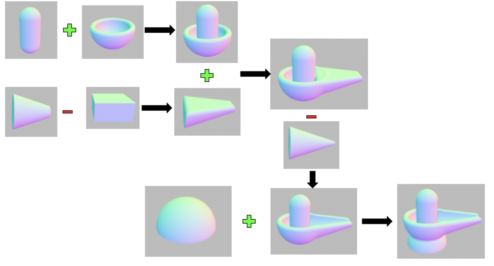
SDF creation steps
The issue here is we are not able to estimate the normal accurately. The normal of the signed distance function is given by gradient of the isoline at that point. We are only able to approximate the gradient using central difference method. The normal computed can be seen in the figure above. Next changes we need to make is with the intersection method. We use ray marching method to find the intersection with the signed distance function.
Code Files:
src/shapes/sdf.cpp
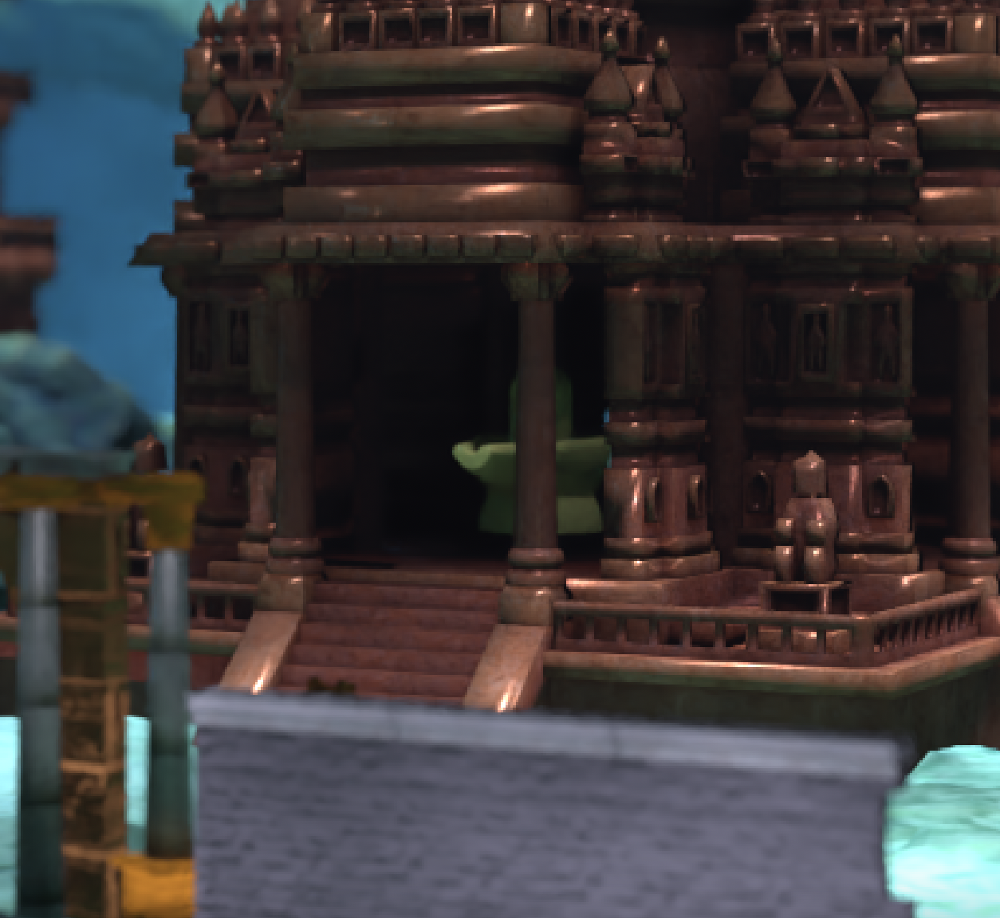
SDF shape(IDOL) implementation in scene
4. Photon Mapping
"Caustics are the heartbeat of underwater realism—without them, light loses its magic beneath the waves."
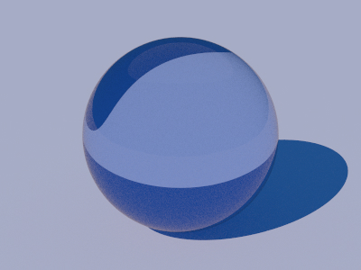
1.Traditional Pathtracer
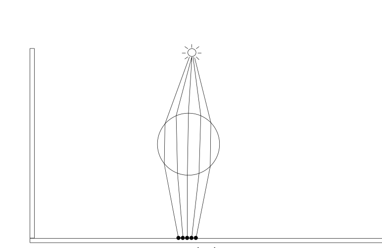
2. Sphere glass refraction
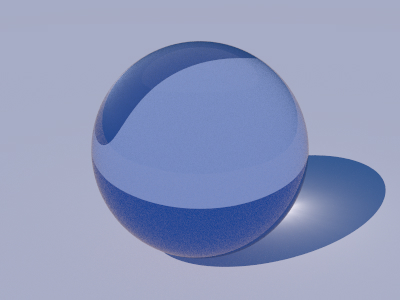
3.Bidirectional Pathtracer using Photon Mapping
In presence of dielectrics the lights get refracted. In such cases using traditional pathtracing it is necessary to to trace a random diffusely reflected ray such that it goes through series of specular bounce over dielectric surfaces before it hits light sources. This often has a small probability but has a significant contributions. The effects are called caustics. For example in figure 2 we see light rays interacting with the sphere glass. The rays are concentrated at a particular point. But in traditional pathtracing to sample all those path from that concentrated point to light is not feasible. Due to which we just get shadow effect as shown in figure 1. So in such cases path are better sampled from the light source. This gives rise to the concept of bidirectional path tracing. Using bidirectional path tracing using concept of photon mapping we got the caustic effects as shown in the figure 3. The lights are concentrated by the sphere glass.
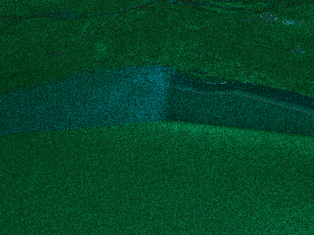
Water Pathtracer
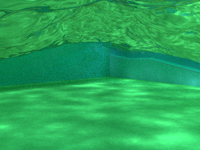
Water Caustics
Here is another example why this feature point was necessary in our scene. Since our scene is underwater we have a surface of water that acts as dielectrics. Thus we are not able to compute direct light contribution inside the water surface. Due to which we get dark image using our traditional pathtracer. The Simple Light Tracer where we start from light source and carry out next event estimation towards the camera can solve this issue. But the problem with this method is we will be missing the reflection of objects in the water surface. So the only way to retain those reflections on surface as well is to implement the photon mapping concept.
In our render we have implemented a bidirectional integrator which implements concept of photon mapping to generates effects known as caustics. The main source of reference was"Henrik Wann Jensen. 2001. Realistic image synthesis using photon mapping. A. K. Peters, Ltd., USA." The whole process is completed in two pass 1.Photon Pass and 2. Render Pass.
Firstly we sample rays from light source. For our scene we have only used sampling of directional lights but can be extended to other light sources as well. We generate a disc that covers whole scene perpendiculat to the direction of the light source. And sample rays from that disc. Now We trace the path of photons and save their interaction in the Photon Map. Here we have considered only the caustic Photon Map which stores the photons that first hit specular object and then diffuse object.
Then in Render pass we carry out similar concept of pathtracing starting from camera but now we also add the contribution of photons at intersection stord in photon map in form of KD tree.
The effect of photon mapping gives arise to the caustic patterns on the botton of the sea bed as seen in figure below. This highly depends on the surface of water and the path light follows due to refraction lights get concentrated in some points. You can see the how using bidirectional path tracing the scene underwater now is visible due to the light contributions from the photons.
Code Files:
src/core/custom_integrator.cpp
src/integrators/bidirectional.cpp
include/lightwave/photonmap.hpp
src/lights/directional.cpp
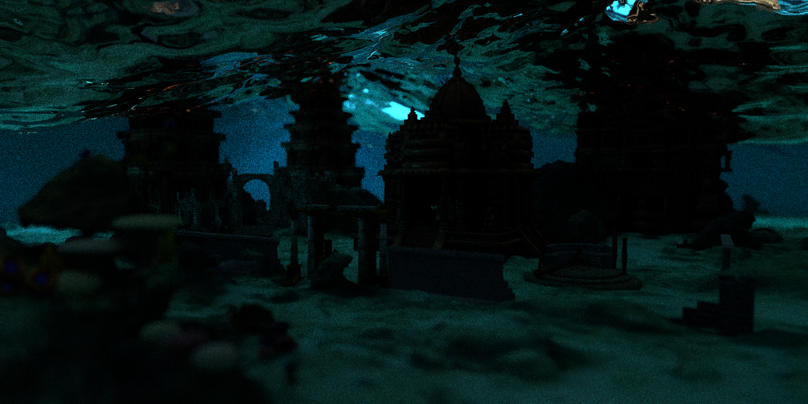
Scene without Photon MappingScene with Photon Mapping
5. Volume Rendering
"Water is not just a surface—it is a depth, a volume."
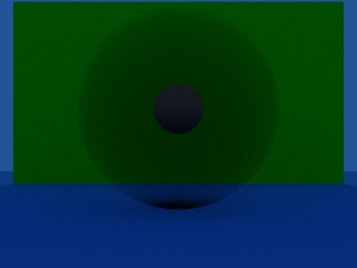
αa = 0.1
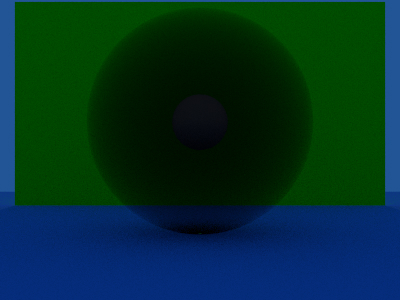
αa = 0.3
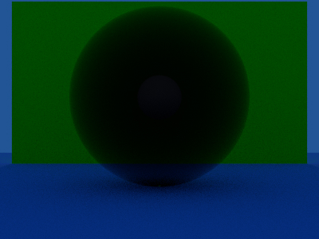
αa = 0.5
Absorption Phenomenon
Figures above shows the effect of absorption in the homogeneous medium in the test scene we have created. As the absorption coefficient is increased the transparency of medium decreases due to attenuation of the light travelling through it.
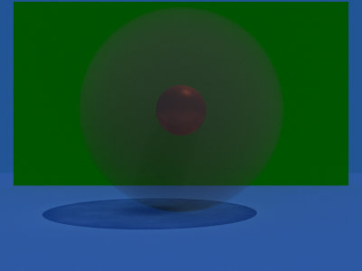
αs = 0.1
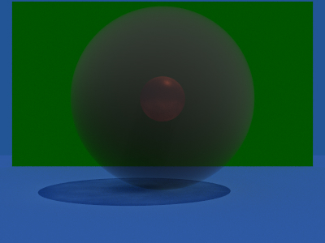
αs = 0.3
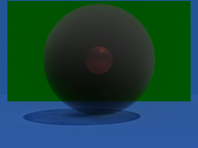
αs = 0.5
Scattering Phenomenon(Keeping αa = 0.05)
Next phenomenon is called scattering. So the light source entering the volume gets scattered thus in the direction of our view ray there is addition of light contribution due to in-scattering and attenuation due to out-scattering. In above figures we see the effect of scattering in the medium in our test scene. The shadow casted by diffuse sphere inside is not purely dark.
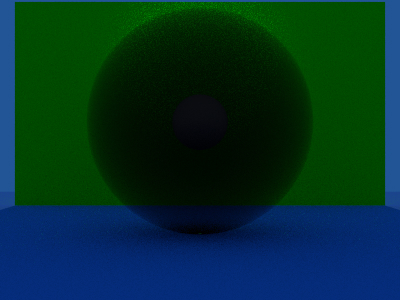
Backward Scattering(g = -0.9)
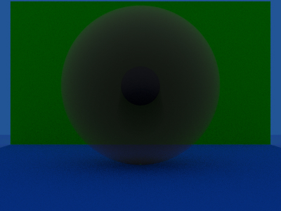
Isotropic Scattering(g = 0)
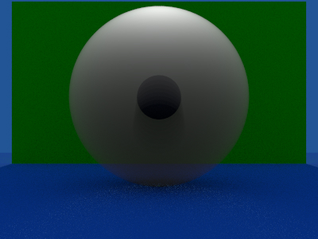
Forward Scattering(g = 0.9)
Phase Function(Light is coming from behind the volume αa = 0.1, αs = 0.3)
Similar to the Bsdf on the surface the phase functions determines how medium interacts with the light source. We have implemented Henyey Greenstein Phase function. For isotropic the scattering is unifrom in any direction around the sphere at that point. But mostly volume scatter in restricted range. In above figure we can see the effect of back scattering and forward scattering in an anisotropic medium when the light source is behind the volume.
The issue with our scene we faced for this feature is same as for traditional path tracer that we cant estimate the direct path to the light source due to dielectic water surface which is necessary for the scattering process. So we have approximated the light rays assuming there is no water and light rays pass straight wihtout refraction. Due to this approximation the proper scattering effect is not quite visible and is very subtle as we have minimised the scattering coefficient. However the absorption effect can be seen. The far away portion become bit dark and it gives faited effect.
Beside this another reason why the proper water volume is not seen is due to the fact of nature of water. Water is very directional in scattering. So we tried with high value of g in phase function. But the to see the effect properly the concept of volume photonmap should be implemented.
Code Files:
src/core/custom_integrator.cpp
src/integrators/volume.cpp
include/lightwave/medium.hpp
src/medium/homogeneous.cpp
Scene without Volume Rendering (Bidirectional Integrator)
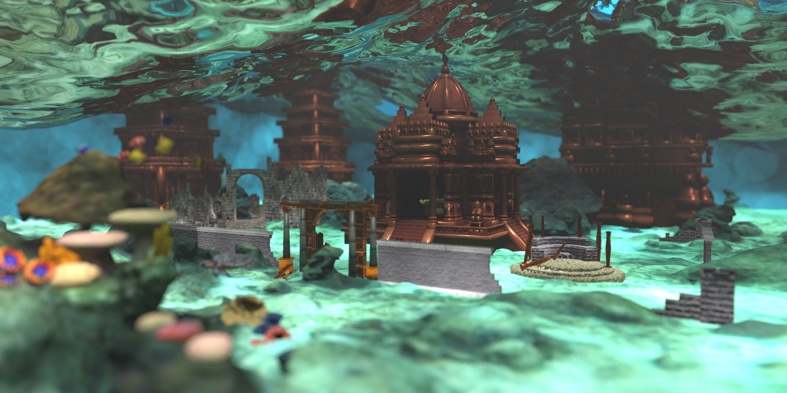
Scene with Volume Rendering
6. Color Grading
"Color shapes emotion, and for our scene, Blue is the soul"
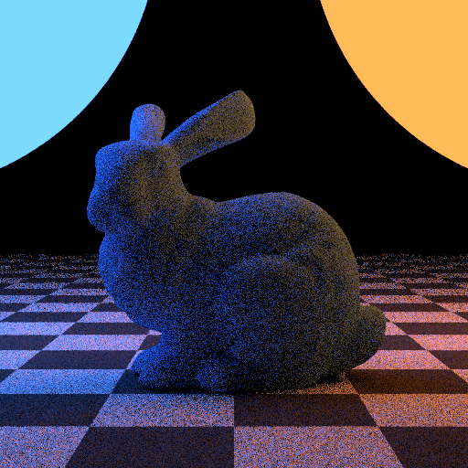
Bunny
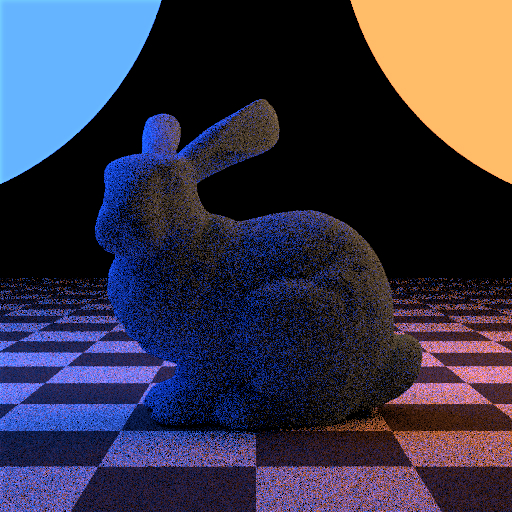
Bunny with color grading
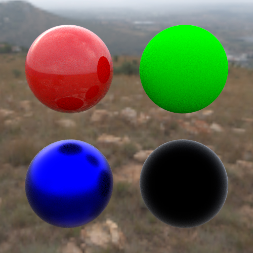
Principled Spheres
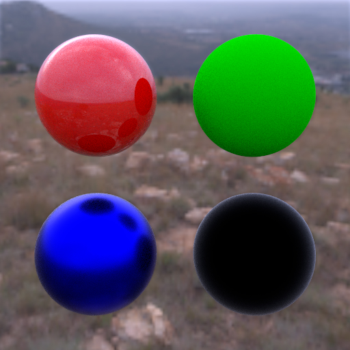
Principled Spheres with colour grading
The effect of colour grading is very subtle in our test scenes, but if you look closely the blue component has been enhanced. also its effect can be distinctly seen in our final scene. We have added color grading by enhancing the blue components of the image. Also to give effect of underwater we decreased the luminance of the green and blue components giving it a bit darker shade.
The method used is to convert image from RGB color space to HSV color space. And on basis of hue value we can estimate pixels with blue component and reduce the illuminance for them. However the issue we get is since we are moidying the values of pixels within fixed range of hue values there is a sharp transition as shown in figure below which is not the effect we want. Therefor we implemented the convolution on the binary mask using gaussian kernel to get smooth transition on mask and modified the values with the weight of the convoluted mask.
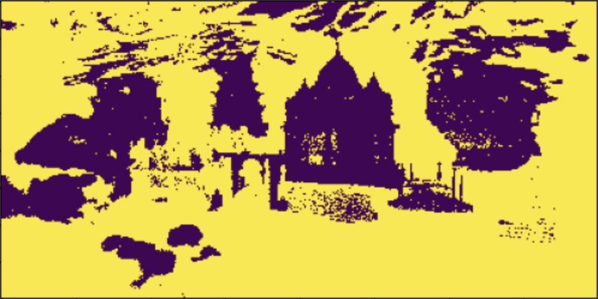
Sharp transition mask
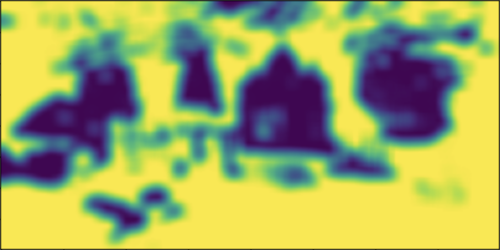
Mask blurred using gaussian kernel
Thus below is the effect of using colour grading as post processing in our final scene. The scene now looks more blue as it should be underwater.
Code Files:
src/postprocessing/color_grading.cpp
Image from Render
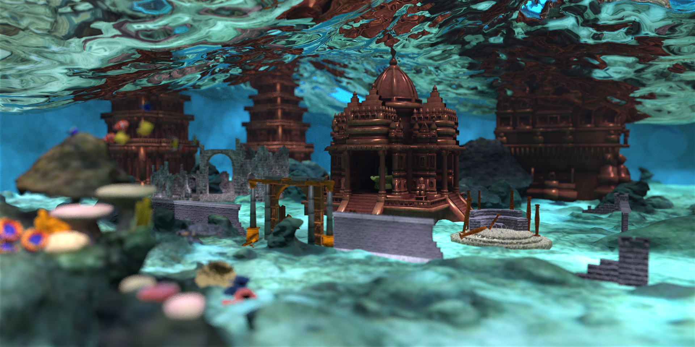
Color Grading(Enhancing blue)
7. Image Denoising
"In the dance of light and pixels, noise disrupts the harmony. With denoising, we silence the chaos, revealing the true beauty beneath."
Since out image is already a high resolution image the noise is not that evident but on closer inspection we can see the presence of the noise. Hence we have at the end implemented the preprocessing of denoising using Intel®Open Image Denoise. The pipeline takes the image from our renderer along with normal and albedo information and generated the denoised image as output as shown in figure below.
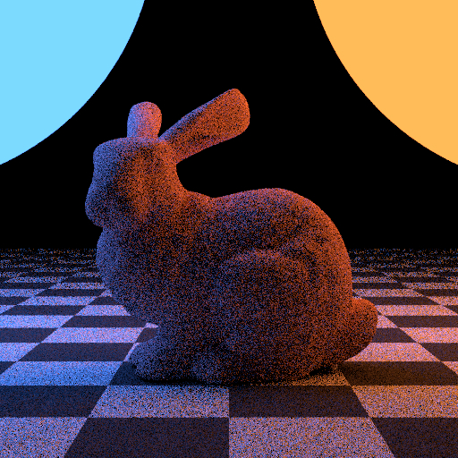
Bunny(Path_tracer)
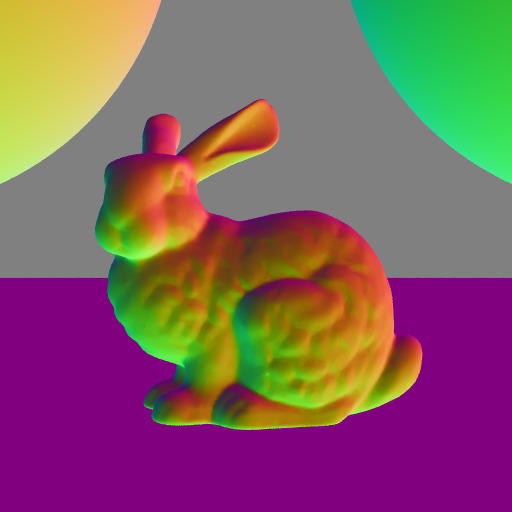
Normal Integrator
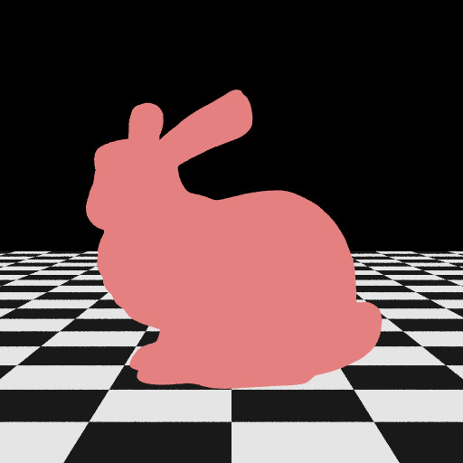
Albedo Integrator
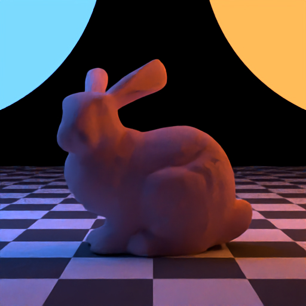
Denoised Bunny
However in our case since we have implemented the post processing of colour grading changing the colours the use of albedo integrator has been removed in our denoising post process. The result of denoising is very subtle but in closer inspection you can see the difference.
Note: The denoising Oidn library used was for MAC OS in my end. Hence it didnt build on gitlab. So we have used
#ifdef LW_WITH_OIDN
#endif
for denoise class.
Code Files: